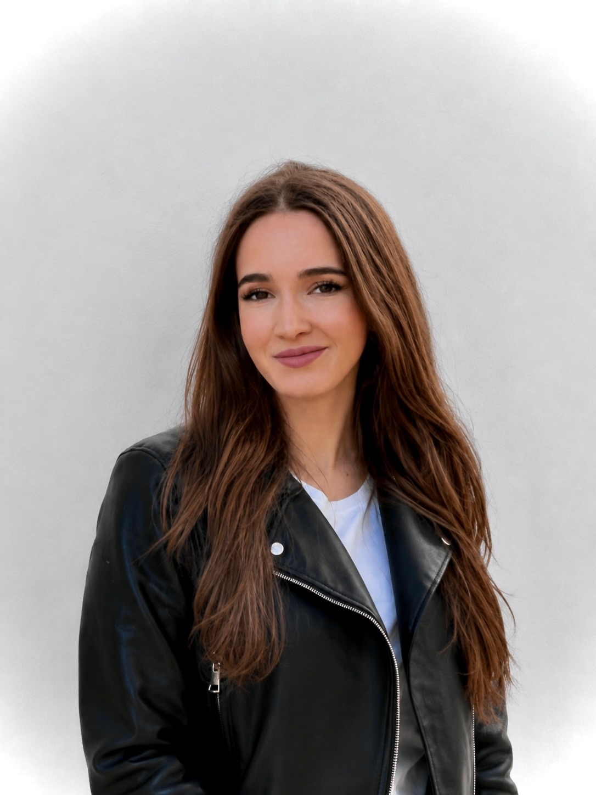

Junior Developer Portfolio: practical, adaptable, ready to grow.
I’m a Game & Application Development student with hands-on experience in websites, UI and interactive projects. This portfolio is meant to show employers that I can learn quickly, work independently and deliver real results — from live client websites to technical and creative study projects.
Client work & real projects
These two projects are the strongest proof of real practical experience. I worked on yoga studio websites and handled structure, media, content updates, responsive adjustments and integration tasks.
Additional technical & creative work
These projects are not the core of my professional direction, but they demonstrate initiative, implementation skills and the ability to finish different kinds of tasks.
About me

I’m a motivated student in Game & Application Development with interest in software, digital products and practical implementation.
What matters most to me is not only the idea, but the ability to turn it into a usable result — whether it is a website, a UI concept or an interactive prototype.
I want employers to see that I already have real hands-on experience, can adapt to different tools and am ready to keep learning quickly in a professional environment.
What I bring
What I worked with
Let’s connect
If you think my profile could fit your team, feel free to contact me. I’d be happy to share more details about my work and learning path.